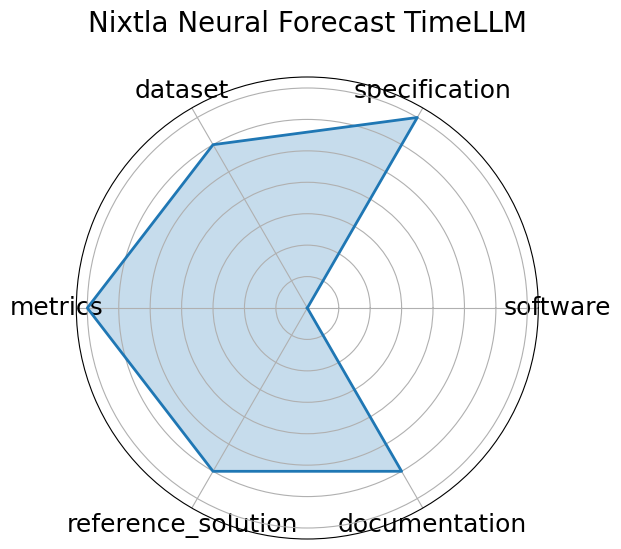

Date: 2023-10-03
Name: Nixtla Neural Forecast TimeLLM
Domain: Time-series; General ML
Focus: Reprogramming LLMs for time series forecasting
Keywords: Time-LLM, language model, time-series, reprogramming
Task Types: Time-series forecasting
Metrics: RMSE, MAPE
Models: Time-LLM
Citation:
Ming Jin, Shiyu Wang, Lintao Ma, Zhixuan Chu, James Y. Zhang, Xiaoming Shi, Pin-Yu Chen, Yuxuan Liang, Yuan-Fang Li, Shirui Pan, and Qingsong Wen. Time-llm: time series forecasting by reprogramming large language models. 2024. URL: https://arxiv.org/abs/2310.01728, arXiv:2310.01728.
bibtex: ``` @misc{jin2024timellmtimeseriesforecasting,
title={Time-LLM: Time Series Forecasting by Reprogramming Large Language Models},
author={Ming Jin and Shiyu Wang and Lintao Ma and Zhixuan Chu and James Y. Zhang and Xiaoming Shi and Pin-Yu Chen and Yuxuan Liang and Yuan-Fang Li and Shirui Pan and Qingsong Wen},
year={2024},
eprint={2310.01728},
archivePrefix={arXiv},
primaryClass={cs.LG},
url={https://arxiv.org/abs/2310.01728}, }
```
Ratings:
Software:
Rating: 4
Reason: Fully open-source under Apache 2.0, integrated into the NeuralForecast library. Includes Time-LLM implementation with example usage and training scripts.
Specification:
Rating: 3
Reason: High-level framing of forecasting as language modeling is clear, but detailed input/output specifications, constraints, and task formalization are minimal.
Dataset:
Rating: 3
Reason: Evaluated on standard datasets like M4 and ETT, but dataset splits and versioning are not bundled or explicitly FAIR-compliant.
Metrics:
Rating: 4
Reason: Standard forecasting metrics such as RMSE, MAPE, and SMAPE are reported. Evaluation is consistent, though deeper metric justification is limited.
Reference Solution:
Rating: 3
Reason: Time-LLM implementation is open and reproducible, but limited baselines or comparative implementations are included directly.
Documentation:
Rating: 3
Reason: GitHub README provides installation and quick usage examples, but lacks detailed API docs, training walkthroughs, or extended tutorials.
Average Rating: 3.333
Radar Plot: 